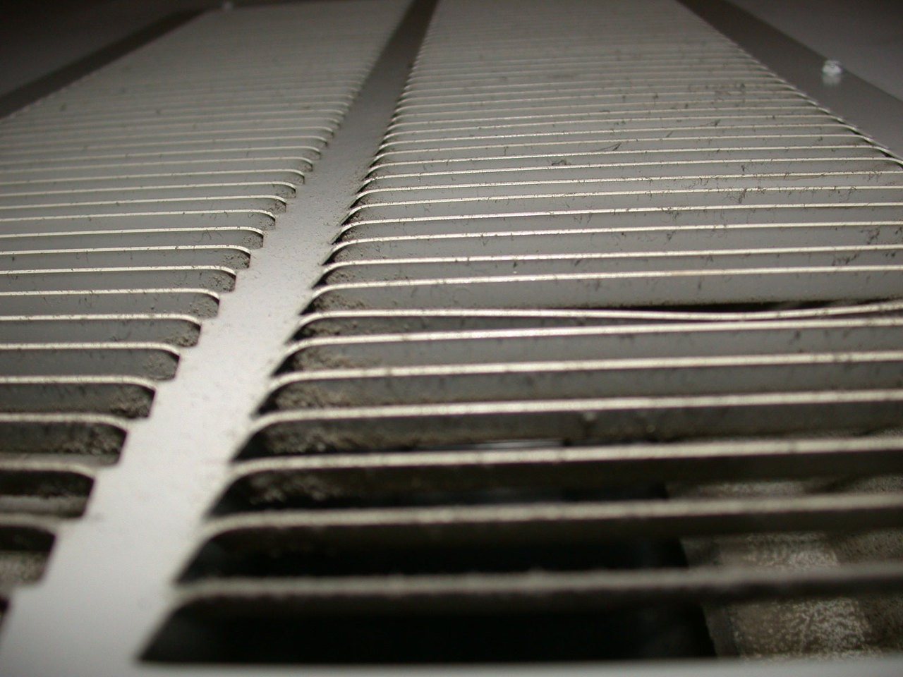
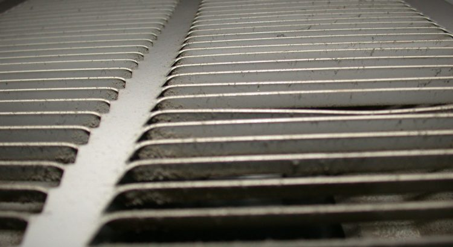
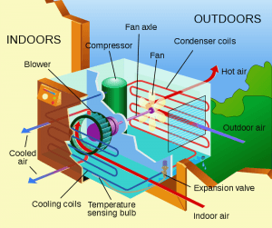
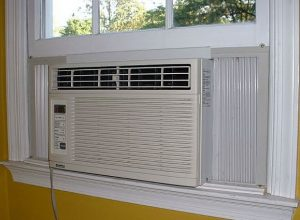

Yes, You Can Service and Make Minor Repairs to Your AC Unit

Room air conditioners, also known as window units, operate in the same manner as a central air conditioner.A room AC may cool only the room in which it’s located, or multiple rooms depending on the size of the rooms and AC.In between the coils are, the compressor, two fans, a motor, and thermostat controls.The coils, compressor, and motor of a room AC are sealed components, so any AC repair (in Palm City, Florida for instance) should be left to a professional service person.
Dirt is the biggest issue with window air conditioners: it can effectively lower the efficiency of the evaporator coil, stop the fan that blows out the cool air, clog filters, and block drain ports.However, you can make minor repairs, and along with regular maintenance, your AC should run effectively.
During winters, room air conditioners should be protected from the environment and harsh weather.Either remove the unit from where it’s mounted and store it or cover the outside portion of the unit with a cover or with heavy plastic sheeting, held in place with duct tape.
Before you do any work on any AC, unplug it and discharge the capacitor or you could end up shocking yourself.The unit’s owner’s manual will show the location of capacitors and detail out how to discharge them.Otherwise, let an air conditioning professional do it.The filter, power cord, coils, switch, thermostat, drain ports, and fan should all be serviced on a routine basis to avoid any issues.Below are the guidelines on how to maintain these key parts:
Filter
At the beginning of every usage season and once a month during that season, remove the front grill and clean or replace the filter diligently.If you live in a predominantly dust prone region, constantly clean or replace the filters.Most room air conditioners have a washable filter.Clean the filter thoroughly with a solution of mild household detergent and water.Let the filter dry completely before reinstalling it.
Power Cord
To check the integrity cord, remove it from the control panel.Unscrew and gently remove the cord terminals and attach a test wire across the lead wires.Hook it on to a volt-ohm-milliammeter (VOM) set to RX1 scale of the cord’s plug.If there is no fluctuation on the meter, the cord is functioning.If there is any sort of fluctuation, replace the cord.
Evaporator and Condenser Coils
Clean the evaporator and condenser coils at the beginning of the cooling season and every month during the season.If you live in a dust prominent region, consistently clean the coils.If the fins on the coils are bent, straighten them with a fin comb, sold at most appliance and hardware stores.A fin comb slides into the gaps provided between the fins.Operate it carefully as the fins are made of light-gauge aluminum and are easily damaged.
Switch
The switch, placed behind the control panel, turns on the AC.If the air conditioner does not run at any setting and is receiving power, chances are the switch has gone bad.To fix the issue, remove the control panel and locate the switch.Check the switch terminals for burnt insulation or burn marks on the terminals anywhere.If you see any indication of any sort of burning taking place, replace the switch with a new one.The switch is held on to the control panel or frame with screws; unscrew it and connect the new one the same way.If you determine the problem may not be the switch, call a professional technician.
Drain Ports
When an AC is under operation, moisture and water from the evaporator coil are directed through the drain ports or an opening between the gap in the middle of the evaporator coil and condenser.At this juncture, the fan blows the moisture against the condenser coil, where the water is dissipated.Drain ports can become clogged with dirt.This results in water leaking down the appliance, through the bottom of the grill.To avoid any clogging, clean out all the ports available with a piece of wire preferably or a pocket knife.Also, check the condenser side of the AC.
Motor and Compressor
If problems occur in the motor or compressor of your AC, call a professional technician.The problem may not be in the mechanics of your unit at all, but probably in the thermostat.
[bsa_pro_ad_space id=4]
Share on Facebook Tweet Follow us
Posted On: 2019-07-31T00:00:00
Posted By: Helen Kennedy






Content Date: 2019-07-31
Download Date: 2021-07-08
Document ID: L0C04D80R